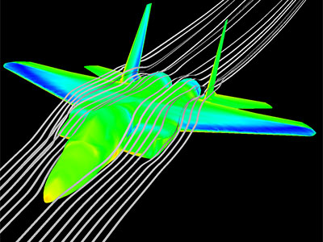
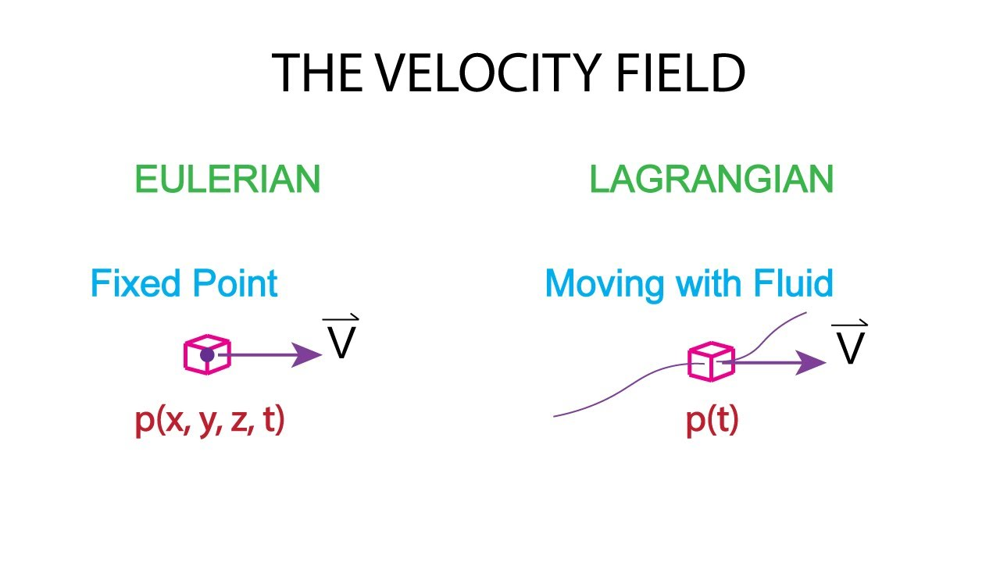
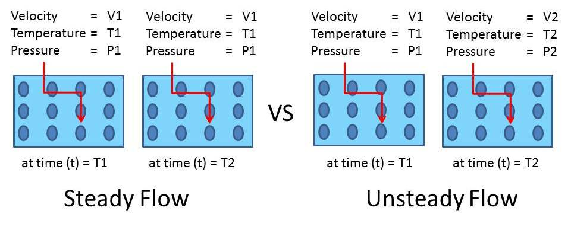

Fluid Dynamics

-
Fluid dynamics deals with the study of fluids under the condition of flow.
-
There are two approaches to describe the motion of a fluid:
- Lagrangian description
- Eulerian description
-

-
In lagrangian approach, we identify a set of fluid particles and track their
proprties as they move on their trajectory. The observer is in motion in this approach.
-
In Eulerian approach, we identify a fixed location in the flow field (Control Volume) and
follow change in its properties, as the fluid flows through that section.
-
Usually, Eulerian description is preffered because it involves simpler
computations.
- Steady State Flow:
-
In steady flow, the velocity of the fluid element at any fixed point
in space remains constant with time.
-

-
The steady state condition for a flow-field implies that the velocity field
and any property associated with the flow field remain unchanged with time.
-
If the velocity of any point in the flow field changes with time, that flow
is called Unsteady Flow.